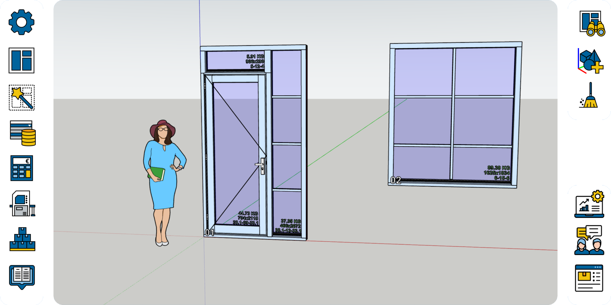

01
3D BIM-integratie
Volledig gericht op 3D en ontworpen voor het BIM-proces. Importeer IFC-modellen en werk vanuit één ruimtelijke bron verder.
Rubysoft Window verbindt BIM, vakkennis en flexibele automatisering. Zo bereid je ieder kozijn slimmer voor — met grip op elk detail.
30+ jaar ervaring
in automatisering voor de timmerindustrie

Werkvoorbereiding hoeft niet te bestaan uit losse stappen, dubbele invoer en handmatige controles.
Rubysoft Window legt jouw productkennis vast in een programmeerbaar netwerk. Het systeem leest 3D- en IFC-informatie, past bedrijfsregels toe en helpt je sneller tot een maakbare, betrouwbare oplossing te komen.
Waarom Rubysoft Window? →Volledig gericht op 3D en ontworpen voor het BIM-proces. Importeer IFC-modellen en werk vanuit één ruimtelijke bron verder.
Leg keuzes, regels en productkennis één keer vast. Dankzij de programmeerbare basis groeit Rubysoft Window flexibel mee met je fabriek.
Wissel projecten soepel uit tussen Rubysoft Window en Groeneveld Automatisering, zonder onnodige onderbrekingen in je proces.
Rubysoft Window combineert slimme automatisering met de vrijheid om je eigen werkwijze te behouden.
Start vanuit een IFC-model of bouw het project direct in 3D op.
Laat software eisen, situaties en jouw voorkeursinstellingen combineren.
Genereer het meest geschikte kozijn en bepaal bijvoorbeeld automatisch het juiste glas.
Breng betrouwbare projectdata door naar de volgende stap in je productieproces.
Isolatie-eisen, doorvalsituaties, windzones en letselbeperking: Rubysoft Window gebruikt de informatie uit je IFC-model om slimme voorstellen te doen binnen de voorkeuren van jouw fabriek.
Praat met een specialist ↗Rubysoft wordt gebouwd door mensen die de timmerindustrie én automatisering van binnenuit kennen. Meer dan 30 jaar ervaring vormt de basis voor software die past bij de dagelijkse praktijk.
Niet de fabriek aanpassen aan de software, maar software die meegroeit met de fabriek.
Ontwikkeld vanuit praktijkervaring met werkvoorbereiding en timmerproductie.
↗Programmeerbare onderdelen en regels die aansluiten op jouw proces en assortiment.
↗Gericht op gegevensuitwisseling en aansluiting op de systemen om Rubysoft heen.
↗Vertel ons waar je in de werkvoorbereiding tegenaan loopt. We denken graag mee over een passende route.
Mail info@rubysoft.eu ↗